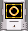
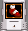
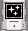
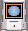
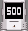
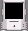
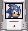
Random bonus
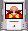
Sonic the Hedgehog 3D is a fan game by Zykov Eddy and it was inspired by two famous Sonic series: the Mega Drive and Sonic Adventure series. The game is made on Build Engine with additional EDuke 32 port.
* Minimum Hardware Requirements:
Windows XP/7
2.0GHz Intel Pentium III or AMD Athlon Processor
256 MB of RAM
64 MB Video Card with OpenGL compatible drivers
("GeForce4 MX" or better)
OpenAL compatible Stereo Sound Card
Keyboard
Mouse
* Recommended Hardware Requirements:
Windows XP/7
Intel Pentium 4 or AMD Athlon XP processor (or better)
1GB(+) of RAM
256(+) MB Video Card with DirectX 9 compatible drivers
("Radeon 9600 Pro" or better)
OpenAL compatible Surround Sound Card
Keyboard
Mouse
We recommend using the latest drivers available.
* Video Hardware Providers/Manufacturers:
ATI: Ati.com
Creative Labs: Creative.com
Hercules: Hercules.com
Intel: Intel.com
Matrox: Matrox.com
Nvidia: Nvidia.com
S3: S3graphics.com
SIS: Sis.com
Trident: Tridentmicro.com
* Default controls
W – move forward
S – move back
A – strafe left
D – strafe right
Space - jump
Mouse 2 – spin dash
E or Mouse 1 - use (you'll need this to press buttons and activate special attacks)
Esc – exit to menu/pause
H – change the hud.
F – activate super mode (you need all emeralds to do it and 50 rings)
F12 – take a screenshot.
You may change the controls in the options.
To play with joystick, select "Input devices: All supported devices" in the start setup window.
* Storyline
The story begins with evil Dr. Robotnik and his minion Metal Sonic stealing the Master emerald from Angel Island. Blinded by Metal's flashbang bomb, Knuckles, the keeper of the Master emerald, confuses Metal Sonic for the real Sonic. "Argh! What... S-Sonic?!" - shouted Knuckles, falling to the ground. Robotnik and Metal escape, and Angel Island, not being powered by the energy of Master emerald anymore, falls down into the ocean.
In the distance, near Tail's workshop, him and Sonic both noticed the island falling. "Something wrong happened to the Master Emerald!" - shouted Sonic. Inside the workshop, Tails used his radar and finds out that the Master emerald has been stolen by Dr. Robotnik for his new evil plan.
"Just as I thought" - said Sonic - "Quickly, let's find him!". Tails and Sonic get into the Tornado and fly away, heading to Dr. Robotnik's base. "What about Knuckles?" - asked Tails. "Don't worry, that Echidna is a real tough guy. I'm sure we'll meet him on the way to the base".
While that happens, Knuckles and his sidekick Mighty follow Sonic and Tails on the foots. "Sonic must be working for Robotnik now! That hedgehog isn't gonna get away with that!" - said Knuckles, noticing the Tornado in the sky. "We'll get them soon when they will land" - said Mighty.
Few hours later. Half way there, the plane suddenly runs out of fuel and crash-lands on Green Island. "What shall we do now?" - said Tails, looking at the big island. "Find Robotnik's secret base and spoil his evil plan of course, just like we always do!" - said Sonic confidently. The two friends got out of the plane and began exploring the island.
Little did they know that Dr. Robotnik had prepared a big surprise for them at his base. "This is gonna be the end for Sonic and his friends" - said the evil doctor, looking at the monitors - "I'm gonna use the power of Master emerald in a brand new way - the kind of way they couldn't even imagine. The world will be mine!".
And so, the adventure begins.
* Gameplay
The game begins with the main menu. To access the main setup, choose the play option. After that, select the start game option. Then you'll need to select your character (Sonic, Tails, Knuckles or Mighty). Each character has its unique abilities.
Your enemies is Dr. Robotnik’s robots. To kill them just jump on them. Watch out for the walking bombs, they will explode if you touch them.
You get hit if you touch robots while you just walking (or the robots shoot you). If you get hit – you will lose your rings. If you get hit while you do not have any rings – you lose one life. If you lose all lives – the game is over. There's no continues in this game.
The game has checkpoints where you can save your game. You can load your saved game when you loose a life or by accessing the main setup menu.
* Characters' Abilities
1.Each character has a spin dash ability. To make spin dash just hold the Mouse 2 button.
2.Tails can fly. Just jump and hold the use button.
3.Sonic can make the Air Dash. Just jump and press the use button.
4.Knuckles and Mighty also have special attacks. Just jump and press the use button while in air.
* Items
Rings -For collecting rings you get score. If you get 100 rings, you will get one new life.
They look like boxes with a screen. To get bonuses just jump on them.
|
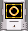 |
10 rings |
|
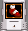 |
Temporary speed boost |
|
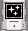 |
Temporary invincibility |
|
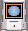 |
Shield |
|
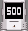 |
Score |
|
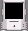 |
Empty bonus |
|
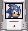 |
Life |
Random bonus
|
|
|
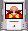 |
Eggman's bonus. Watch out! |
* Shield bonus
1.Water shield
Allows characters to breath underwater, also protects the player from toxic water.
2.Fire shield
This shield gives the player fire immunity.
3.Electric shield
This shield attracts rings and gives electricity immunity to the player.
Each shield can protect the character against one hit. Fire and electric shield would disappear when the character went into water
* Bonus Stages
If you collect 100 rings on a level, you will get into a bonus stage at the end. If you win, you will get the emerald. You can collect 5 emeralds on normal bonus stages in the current version. To get the last two emeralds, you have to unlock the bonus level.
* Unlockable Bonuses
This kind of bonuses can be unlocked in main setup menu. You can unlock two features:
1.Level select. Just finish the demo to unlock this feature.
2.Bonus level, where you can get the two emeralds. To unlock Bonus stage you need to collect 5 emblems on the levels (Boss levels do not have emblems).
* Credits
Zykov Eddy – Lead Developer.
E_mail: edik.zykov@yahoo.com
Blog: eddyprojects.blogspot.ru
Tea Monster - modeller (since 2012)
[LP]Scorpion, Cold, Speedus – modellers (until summer of 2010)
Special thanks to Sly and Soer for great art support.
* Special Thanks
Quartz for helping with menu design.
Cstyler for support.
Junker for flicky model and beta testing.
Ashnal for Sonic and Knuckles models.
Mephiles the hedgehog for textures support.
Hey-Pi-Ron for some sounds, skins for models and beta testing.
Dimag0g for coding support.
Sunlight for beta testing.
M210 for beta testing.
Lezing and DeeperThought for help with code.
Shadow Hunter for his character icon sprites support.
STP for some models.
Chicken for ring model skin.
NeKit for helping with website, manual and ports.
Mikko Sandt for review on his site.
Special thanks to guys from Sonic CIS, AMC and duke4.net forums for some nice ideas.
Thanks to Daroach and U1tim@t3 MikLess for modeling support.
* Bugs
A lot of bugs were fixed after 2011, but there's still some problems.
Some players may have a problems with OpenGl renderer.
Possible reasons of OpenGl errors:
1. 8-bit renderer is accidently chosen.
Solution: Choose the 32 bit renderer in the starting setup screen.
2.Video card driver needs to be updated. Very common for Radeon owners.
Solution: update the video card driver.
3.The machine is Outdated. It also very common for netbook/notebook users.
Solution: Sadly, there's no solution for this problem. Try to play the game on another machine.
* Copyrights
Textures, music and sounds are taken from:Quake
Quake 2
Unreal
Tek War
Duke Nukem 3D TCs
Liquidator
Blood
Hexen2
Half Life
Zero Wing
Shadow Warrior
CG textures
Zelda CD-I games (music tracks)
In pursuit if greed (music tracks)
Fighting Vipers 2 (music track)
Sonic OVA (music tracks)
Batman Beyond (music track)
Sol Deace (music track)
And other sources, which I can’t remember.
Some textures made by jeztac33.
Some textures and models taken from Duke HRP.
Sonic the Hedgehog 3D is a freeware, non-commercial fan project, not an official Sonic the Hedgehog game. You may NOT sell this software to gain profit. This project was not sponsored by any parties that are in any way related or affiliated with the "Sonic the Hedgehog" logo. Released as FREEWARE, but not public domain. All original Zykov Eddy material (c) Zykov Eddy. EDuke32 (c) TerminX, Pierre-Loup "Plagman" Griffais, Philipp "Helixhorned" Kutin, Matt "Matteus" Saettler. Build engine (c) Ken "Awesoken" Silverman. Sonic the Hedgehog (c) Sega.